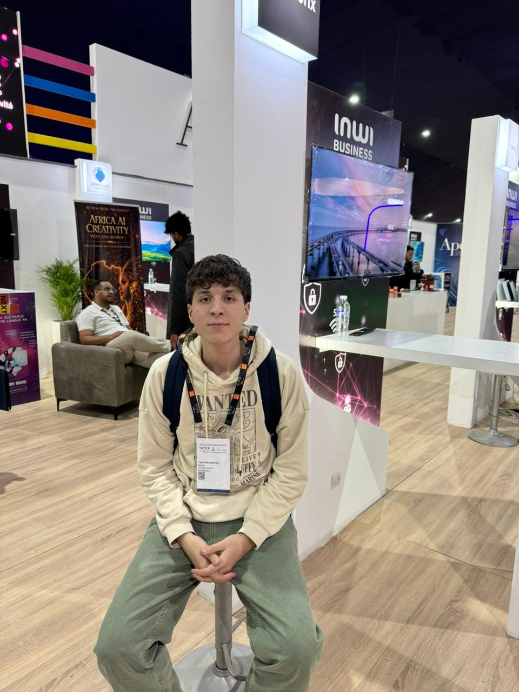

Engineering student at ENSAF specializing in infrastructure automation and cloud computing. With hands-on experience at Alten optimizing CI/CD pipelines and visualizing strategic data. Skilled in designing resilient systems using Python, Docker, and OCI environments. Passionate about aligning business needs with high-performing technology architectures.

Computer Science engineering student with 2+ years of hands-on experience building full-stack web applications. With a strong background in preparatory mathematics and physics, I bring analytical and algorithmic thinking to software engineering challenges. I work across Java/Spring Boot, React.js, and Oracle/MySQL, focusing on scalable architecture, RESTful APIs, JWT-based security, and responsive UI. Comfortable with Docker and Git-based workflows. I’m also increasingly interested in DevOps—especially CI/CD, deployment automation, and cloud/container best practices—to deliver software that is both fast to ship and reliable to run. I’m passionate about writing maintainable code that creates real business value.
Projects Completed
Years of Experience
Technologies Mastered
E-commerce platform specialized in antique sales with advanced management system. A comprehensive marketplace connecting buyers and sellers in a secure environment with integrated payment systems.
A comprehensive school news management and display system featuring Laravel backend for news administration and WordPress plugin for website integration via REST API communication.
Integrated business management system automating enterprise processes from inventory to invoicing. Features real-time analytics, modular architecture, and comprehensive security with role-based access control.
Integrated business management system automating enterprise processes from inventory to invoicing. Features real-time analytics, modular architecture, and comprehensive security with role-based access control.
Secure Spring Boot REST API deployed on Oracle Cloud (OCI) and connected to Oracle Autonomous Database. Includes JWT authentication, Swagger documentation, clean architecture, and SQL scripts for schema + seed data.
Modern, responsive portfolio website showcasing development skills and projects. Built with performance optimization, SEO best practices, and interactive animations.
2021 - 2022
Morocco
Scientific track with specialization in Mathematics and Physics. Strong foundation in logical reasoning and analytical thinking that paved the way for computer science studies.
2023 - 2025
ENSAF
Two intensive years focusing on advanced mathematics, physics, and algorithm fundamentals. Built strong analytical and problem-solving skills that form the foundation of my programming expertise. Excellent background in mathematical modeling, linear algebra, and algorithmic thinking.
2025 - 2027
ENSAF
Specialization in Web and Mobile Application Development, Artificial Intelligence and Machine Learning, Agile Software Development, Internet of Things (IoT), Major academic projects and acquired skills.
2025 - 2025
CASABLANCA
WordPress website redesign for a Private National School and Development of a news interface using Laravel